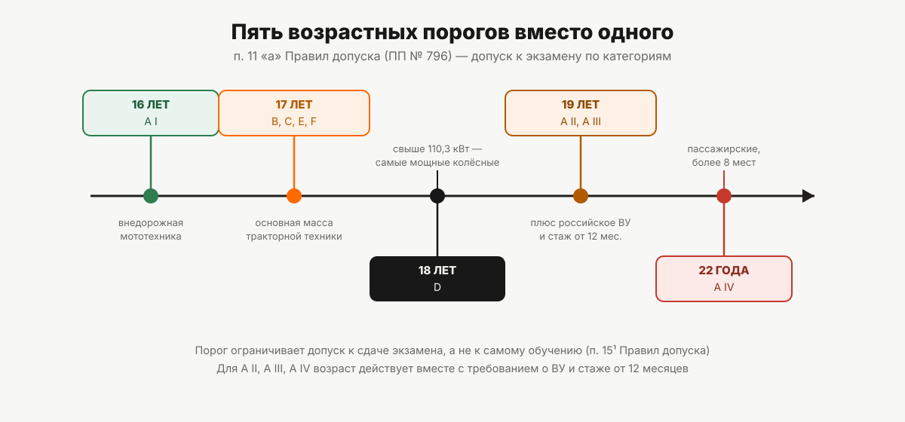

Со скольких лет можно получить права на трактор
Пять возрастных порогов вместо одного: 16 лет на внедорожную мототехнику, 17 на большинство тракторов, 18 на тяжёлые колёсные, 19 и 22 — на внедорожные автомобили. Откуда берутся цифры.
«Сыну 16 лет, на что он вообще может сдать?» — вопрос звучит так, будто ответ один. На самом деле в Правилах допуска к управлению самоходными машинами (постановление Правительства РФ от 12.07.1999 № 796) закреплено не одно возрастное ограничение, а пять — по одному на группу категорий, от 16 до 22 лет. Разбираем шкалу целиком, от младшего порога к старшему.
16 лет: категория A I
Самый ранний порог — 16 лет, и он относится только к категории A I: внедорожным мототранспортным средствам (квадроциклам, снегоходам и подобной технике). С 16 лет закон допускает к экзамену на эту категорию — при выполнении остальных условий: медицинского заключения и профессионального обучения. Что именно попадает в категорию A I и чем она отличается от других подкатегорий A, — в статье «Категории удостоверения тракториста-машиниста». Отдельный разбор техники этой категории — в статье «Права на квадроцикл и снегоход».
17 лет: категории B, C, E, F
С 17 лет открывается доступ к экзамену на категории B, C, E и F — это основная масса тракторной техники: от маломощных тракторов (категория B) через средние и мощные колёсные (C) и гусеничные (E) до самоходных сельскохозяйственных машин (F). Для большинства тех, кто хочет учиться на обычный трактор, порог именно этот.
18 лет: категория D
Категория D — самые мощные колёсные машины, свыше 110,3 кВт, — открывается с 18 лет. Это единственный порог, который совпадает с общегражданским совершеннолетием, и единственная из категорий B–F с отдельным, более поздним возрастом.
19 лет: категории A II и A III
Следующий скачок — до 19 лет, и относится он уже не к тракторам, а снова к внедорожным автомобилям: категориям A II (масса до 3500 кг) и A III (масса свыше 3500 кг, кроме относящихся к A IV). Здесь возрастной порог — не единственное условие: для этих категорий также требуется российское национальное водительское удостоверение соответствующей категории и стаж управления не менее 12 месяцев. Как это требование работает и что считается стажем — в статье «Категории A II, A III и A IV: кому они доступны».
22 года: категория A IV
Самый поздний порог — 22 года, и он относится к одной категории: A IV, внедорожным автотранспортным средствам, предназначенным для перевозки пассажиров, с числом мест более восьми сверх водителя. Логика здесь ближе к автобусной: чем больше людей может пострадать в случае аварии, тем позже открывается допуск.

Сводная шкала
| Возраст | Категории |
|---|---|
| 16 лет | A I |
| 17 лет | B, C, E, F |
| 18 лет | D |
| 19 лет | A II, A III |
| 22 года | A IV |
Почему пороги растут неравномерно
Сама норма не объясняет логику возрастной шкалы — Правила допуска просто фиксируют пять цифр без пояснительной части. Если смотреть на то, что стоит за каждым порогом, видна закономерность: чем выше масса машины, чем больше людей она может перевозить и чем разрушительнее потенциальные последствия ошибки — тем позже открывается допуск. Категория A IV (пассажирский транспорт, более восьми мест) — самый поздний порог, категория A I (лёгкая мототехника) — самый ранний. Это наблюдение по структуре нормы, а не декларированное в тексте объяснение: официального обоснования именно такой шкалы в Правилах допуска нет.
Возраст ограничивает экзамен, а не обучение
Важная деталь, которую легко упустить: возрастной порог в Правилах допуска сформулирован как условие допуска к сдаче экзамена, а не к самому обучению. Прямая формулировка есть в пункте о том, кого не допускают к экзамену: одно из оснований для недопуска — недостижение возраста, указанного в соответствующем подпункте пункта 11 Правил. Речь именно про экзамен.
Это не значит, что учебная организация обязана принимать на обучение с любого возраста, — условия приёма на обучение конкретная организация устанавливает сама, и это уже её внутреннее дело, а не норма Правил допуска. Но формально норма ограничивает именно момент сдачи экзамена, а не начало обучения. Как устроен весь путь от заявления до получения удостоверения — в статье «Как получить права тракториста».
Что если прийти на экзамен раньше срока
Правила допуска прямо называют недостижение нужного возраста основанием для недопуска к сдаче экзамена. То есть у кандидата, чей возраст на момент назначенной даты экзамена меньше требуемого порога по выбранной категории, документы не примут либо к экзамену не допустят — сама процедура такого случая (что именно делает орган гостехнадзора, если несоответствие возраста обнаружится не сразу) в тексте Правил допуска не детализирована, и додумывать её мы не будем.
Учиться по программе конкретной категории при этом можно на общих условиях учебной организации — учебная часть и допуск к экзамену не совпадают по срокам автоматически, и это стоит уточнять до начала обучения, а не после.
Если вам уже больше 22 лет, а в допуске отказали
Обратная ситуация — взрослый человек, которому за 22, и он не понимает, почему ему не дают сдать экзамен, хотя возраст точно не проблема. Это частый случай: возрастная шкала Правил допуска доходит максимум до 22 лет и дальше не растёт, поэтому у совершеннолетнего кандидата старше этого возраста порог по определению пройден для всех девяти категорий без исключения. Если отказывают именно в допуске к экзамену, причина в чём-то другом — чаще всего это отсутствие действующего медицинского заключения формы 071/у, отсутствие профессионального обучения в организации с необходимым свидетельством, а для категорий A II, A III и A IV — ещё и отсутствие российского водительского удостоверения соответствующей категории или недостаточный стаж управления им. Возраст в такой ситуации проверять уже не нужно — нужно проверять остальные условия допуска по порядку.
С какого возраста берут на обучение — уже решает сама учебная организация в рамках своих условий приёма; тракторное направление «Авто-Класса» заявляет несколько категорий на своей странице, подробности — на странице направления.